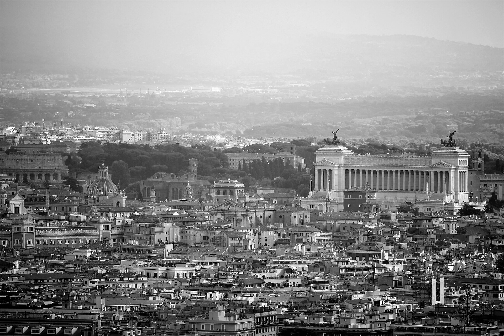
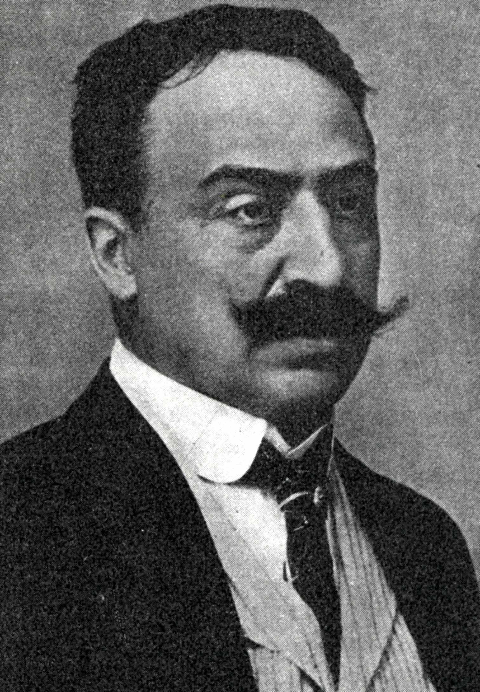
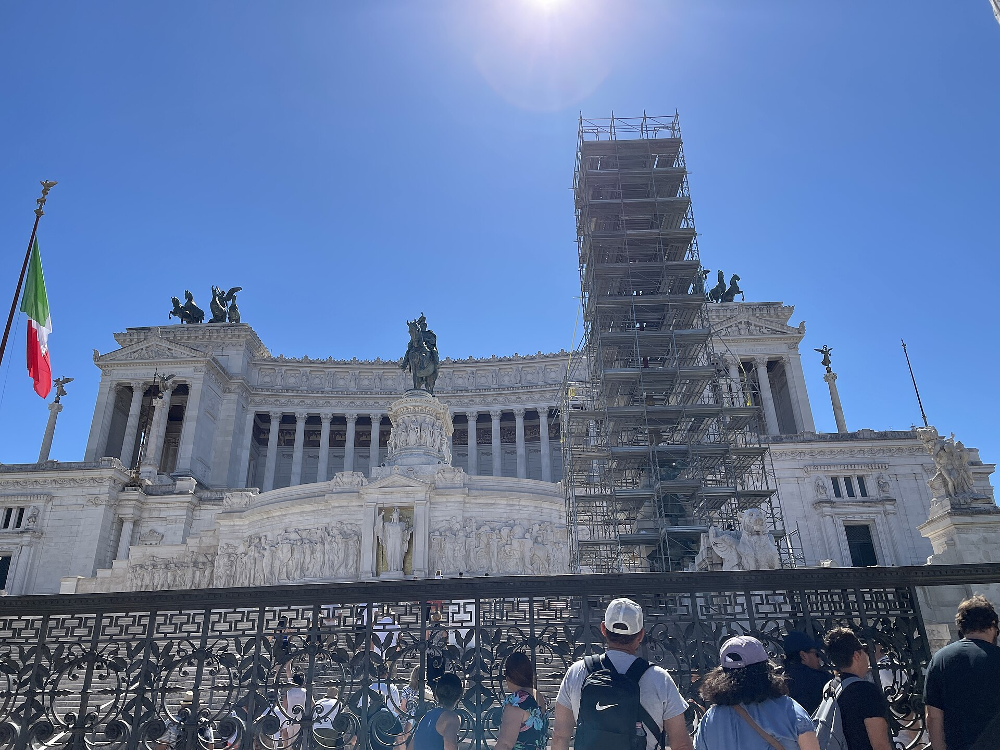
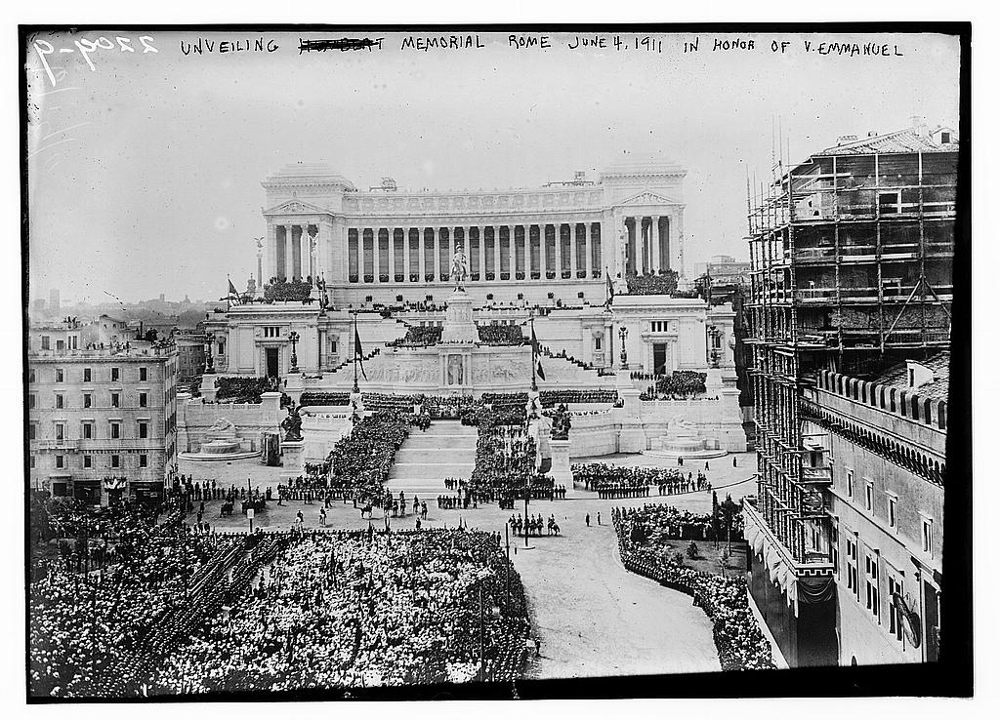

The Vittoriano, the Altare della Patria, the Altar of the Fatherland: the enormous white monument that rises off Piazza Venezia at the foot of the Capitoline Hill in Rome, the one guidebooks apologize for and Romans nicknamed the typewriter and the wedding cake. It is easy to mock and almost everyone does. It is also one of the most instructive civic building projects of the modern era, because it is a fully documented case study in what a brand-new nation-state does when it decides, deliberately and at enormous cost, to build a permanent symbol of itself in the center of an ancient capital. Italy had existed as a unified country for barely two decades when it committed to the project. It took fifty years to finish. This is the story of how it actually got built, competition by competition, foundation to sculpture.

Victor Emmanuel II, king of Sardinia-Piedmont, became the first king of a united Italy in 1861. He died on January 9, 1878, and within a year the young state resolved to build him a national monument, not merely a tomb but a symbol of the entire Risorgimento, the decades-long movement that had welded a peninsula of separate kingdoms, duchies, and papal territory into one country. The decision was to place it on the most conspicuous and most historically loaded ground in Rome, and to spare nothing on it.
The first international competition was announced on September 23, 1880, and drew 311 entries. The winner was a Frenchman, Henri-Paul Nénot, with a design for a triple-arched triumphal arch to stand near the railway station at Termini. It was never built. A monument to Italian nationhood designed by a foreigner, announced amid the diplomatic humiliation Italians called the "slap of Tunis," was politically impossible, and the whole result was thrown out.
A second competition was announced on December 18, 1882, this time restricted to Italian architects and fixing the site on the Capitoline Hill. The brief was specific: an architectural backdrop at least thirty meters long and twenty-nine high, ascending tiers, a colonnade, and an equestrian statue of the king set about twenty-seven meters up. Ninety-eight proposals came in by February 9, 1884. The jury deadlocked between three finalists, Bruno Schmitz, Manfredo Manfredi, and Giuseppe Sacconi, and ran a third limited round that ended on June 24, 1884. Sacconi won. He was barely thirty years old, and he had just been handed the single most conspicuous building the new nation would ever raise.

Sacconi did not invent freely. He reached back past Rome's own imperial ruins to the terraced sanctuaries of the Hellenistic world: above all the great Sanctuary of Fortuna Primigenia at Palestrina, ancient Praeneste, whose ramps and terraces climb a hillside in symmetrical stages, and the Altar of Pergamon, with its wide colonnade riding above a monumental base. To those he added the classical and Renaissance tradition, the manner of Bramante in particular. The result was conceived not as a solid pile but as a modern forum, an agora open to citizens, organized across three connected levels with generous room to walk, and crowned by a long curving Corinthian portico. Two monumental gateways, the propylaea, would stand for the two ideas the monument was meant to fuse: the unity of the fatherland and the freedom of the citizens. The explicit ambition was to set the Vittoriano deliberately among the monuments of both ancient Rome and papal Rome, a third Rome, the Rome of the nation.
Sacconi's design demanded the north slope of the Capitoline, the most historically dense ground in the city. To open the footprint, the state carried out expropriations and demolitions between roughly 1884 and 1899 that erased about 19,200 square meters of the medieval quarter on the hill's northern flank. Down came the three cloisters of the Franciscan convent of the Ara Coeli, the so-called Tower of Paul III, the raised passetto that linked it to the Palazzo Venezia, the church of Santa Rita da Cascia, and whole streets, the Via della Pedacchia, the Via di Testa Spaccata, the Via Marforio. This is the part of the story the mockery leaves out. The Vittoriano is not just large; it was cut into the living fabric of Rome at the cost of centuries of older building. It was fiercely opposed at the time, by the mayor Leopoldo Torlonia, by the great archaeologist Rodolfo Lanciani, by the parliamentarian Ruggiero Bonghi. The prime minister, Agostino Depretis, overruled them all, judging the buildings expendable against the symbolic gain of building on that exact spot. The new nation decided its own monument outranked the medieval city, and it acted on that decision with a wrecking crew.
Work began on January 1, 1885, and King Umberto I laid the first stone on March 22, 1885. Then the ground betrayed them. The excavations, instead of the solid tuff everyone expected, turned up river clay, sand banks, and a startling honeycomb of ancient caverns, tunnels, and quarries; the Romans had been mining the hill for two thousand years. Worse, or better, depending on how you count it, the diggers struck a section of the Servian Wall, the city's defensive wall from the sixth century BC. It could not simply be destroyed. Sacconi redesigned the foundations around it, adding two great piers under the portico and, in the process, stretching the portico from ninety to a hundred and fourteen meters and increasing the columns, propylaea included, from sixteen to twenty, each made more slender. The enlargement was so drastic it forced the demolition and reconstruction elsewhere of the flanking Palazzo Venezia and Palazzo Torlonia. In all, the site swallowed some seventy thousand cubic meters of excavated earth. Sacconi turned the disaster into an asset, conceiving a network of interior galleries and crypts in the underground voids, spaces that would later hold the Central Museum of the Risorgimento, the Shrine of the Flags, and the Tomb of the Unknown Soldier.

Here is the decision Romans never forgave. Rome is a city of warm stone, the honey-colored travertine and tan brick that give the old center its color, and Sacconi originally specified exactly that: travertine for the lower mass, marble only for the upper portico, a deliberately two-toned composition. On July 2, 1889, the royal commission overruled him and decreed a single material throughout: white Botticino marble, quarried near Brescia in the north, hundreds of miles from Rome. The official reasons were cost and color, Botticino's white carries a faint straw-yellow warmth that reads more kindly than the cold blue-white of Carrara, and the powerful minister Giuseppe Zanardelli is usually credited with, or blamed for, forcing the choice. Losing his two-tone contrast, Sacconi compensated by enriching the whole perimeter with additional friezes, trophies, bas-reliefs, and small statues to carry the visual rhythm the color change had taken away. The effect is a monument that will never blend into Rome, that glares white in every photograph, and that a century of visitors have found impossible to love, which is also, precisely, why no one forgets where it is.
The finished monument stands about 70 meters tall, 81 meters at the tips of the bronze chariots, and 135 meters wide, covering roughly 17,550 square meters. The budget tells the same story as the marble. The first estimate was about nine million lire. By the time the main construction was done the cost had reached roughly 26.5 million, with some accounts putting it at thirty, driven by the enlarged portico, the underground works, and the ever-growing program of sculpture. Construction of the fabric ran from 1885 to the inauguration in 1911, and campaigns of detailed work continued until about 1935, a full half-century from the first stone. Sacconi himself did not live to see it. He died in 1905, and the work passed to a team of directors, Gaetano Koch, Manfredo Manfredi, and Pio Piacentini, who carried it through the final decades and, around the turn of the century, replaced Sacconi's original twin staircase with a single grand entrance flanked by the two great fountains of the seas.

Jan 9, 1878 Victor Emmanuel II dies; the monument is resolved on
1880 / 1882 Two competitions; Nénot's arch scrapped
Jun 24, 1884 Sacconi, barely 30, wins the final round
Mar 22, 1885 First stone laid by King Umberto I
1887 Servian Wall found; foundations redesigned
1889 Botticino marble decreed over travertine
1905 Sacconi dies; Koch, Manfredi, Piacentini continue
Jun 4, 1911 Inaugurated, 50th anniversary of unification
Nov 4, 1921 Tomb of the Unknown Soldier
~1935 Work finally complete, ~26.5M lire, 135m x 70m
The Vittoriano is as much a sculpture gallery as a building, and the statuary was commissioned across decades from artists all over Italy. At the architectural center stands the colossal bronze equestrian statue of Victor Emmanuel II. Enrico Chiaradia was commissioned in April 1889 and cast the horse and rider from the bronze of melted-down Royal Army cannon; when he died in 1901 the work was finished by Emilio Gallori, who tuned it to the neoclassical setting. Its marble base carries allegorical figures of the fourteen "noble cities," the capitals of the pre-unification Italian states, carved between 1907 and 1910. By legend the bronze horse was large enough that a small banquet was held inside its belly before it was sealed and set in place.
Above the porticos ride two bronze quadrigas, four-horse chariots each driven by a winged Victory, hoisted into place in 1927: one for the Unity of the Fatherland by Carlo Fontana, one for the Freedom of the Citizens by Paolo Bartolini. Along the portico cornice stand sixteen allegorical statues, one for each region of Italy, each about five meters tall and each carved by a different sculptor drawn from that region, so the crown of the monument is literally made by the hands of the whole country. Flanking the base are the two great fountains of the seas: the Adriatic by Emilio Quadrelli and the Tyrrhenian by Pietro Canonica, personifying the waters that bound the peninsula.
At the heart of the composition, at the foot of the central stair, is the Altare della Patria proper, the Altar of the Fatherland. The sculptor Angelo Zanelli won a competition for it in 1908 and unveiled the work in 1925: a statue of the goddess Roma at the center of a fifty-meter frieze, flanked by reliefs of the Triumph of Labor and the Triumph of Patriotic Love, their imagery drawn from Virgil's Georgics and Eclogues. This altar to the nation as such, not to the king, was always meant to be the sacred core of the monument.
In 1921 it was given the meaning it still carries. On November 4, 1921, the body of an unidentified Italian soldier killed in the First World War, chosen from eleven unknown dead by a war mother named Maria Bergamas, was entombed beneath the goddess Roma. The Tomb of the Unknown Soldier, the Milite Ignoto, with its eternal flame and permanent honor guard, turned the Vittoriano from a monument to a dead king into a living national shrine, and it is from that tomb that the whole structure took on the name Altar of the Fatherland. In the years that followed, altars to the "redeemed cities," Trieste, Trento, Gorizia, Pula, Zadar, Fiume, were added between 1929 and 1930. Whatever Romans think of the marble, they do not walk past the flame with their hats on.
The easy reading of the Vittoriano is that it is a folly: too big, too white, too pompous, a young state overcompensating in stone. That reading is not wrong, but it misses the more useful lesson. A country that had existed for barely twenty years understood something that older and richer nations routinely forget: that a nation is partly a physical fact, that it has to be built and located and made visible, and that a capital without a sacred center of gravity is not really a capital. Italy chose to spend fifty years, a fortune, and a piece of its own medieval heart to put a permanent, unmissable object at the exact center of Rome, and it did not stop when the ground turned to sand, when the wall of the ancient kings turned up in the foundation, when the cost tripled, or when the architect died with the work half done. It finished. Every Italian knows where the Altar of the Fatherland is, and every Italian knows what is buried there.
The relevant comparison for us is not the taste but the resolve. The Vittoriano is proof that civic monument-building at the highest scale is a decision, not a mystery. A generation decided the nation deserved a permanent seat, argued about it in public, ran three rounds of open competition, cleared the hardest ground in the country, re-engineered the foundation around a twenty-five-century-old wall, quarried a mountain of marble, and commissioned the hands of every region to finish it, across fifty years and the death of its own architect. American cities today, immeasurably wealthier and with far greater technical capacity, have largely lost the nerve to decide that anything is worth building permanently and beautifully at the center of public life. The Vittoriano is a reminder that a poor young country did exactly that, on the worst possible site, and that the one thing it required was the will.
Building permanent civic architecture in America again. Tell us who you are.
Sources. Competitions, design, foundation, demolitions, marble, costs, and sculpture program: Wikipedia, "History of the Vittoriano" and "Victor Emmanuel II Monument"; VIVE (Vittoriano e Palazzo Venezia, Italian Ministry of Culture), "Giuseppe Sacconi and the construction of the Vittoriano (1885-1905)." Quadrigas, regional statues, and the fountains of the seas: Wikipedia, "Altare della Patria." Dimensions and Unknown Soldier: cross-checked against the same. Compiled and cross-checked July 2026.